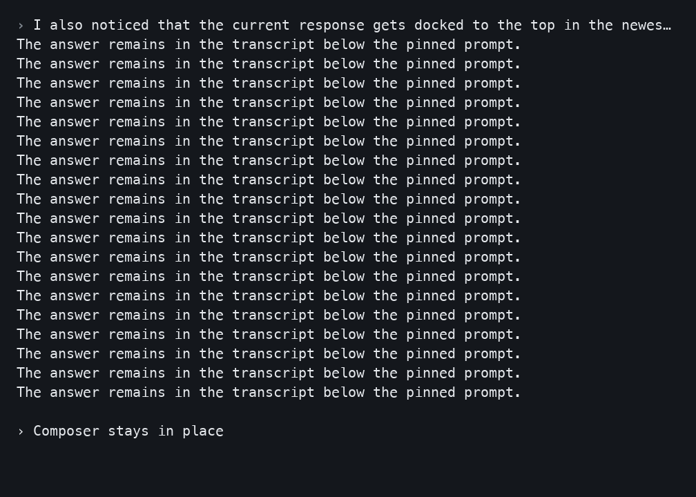
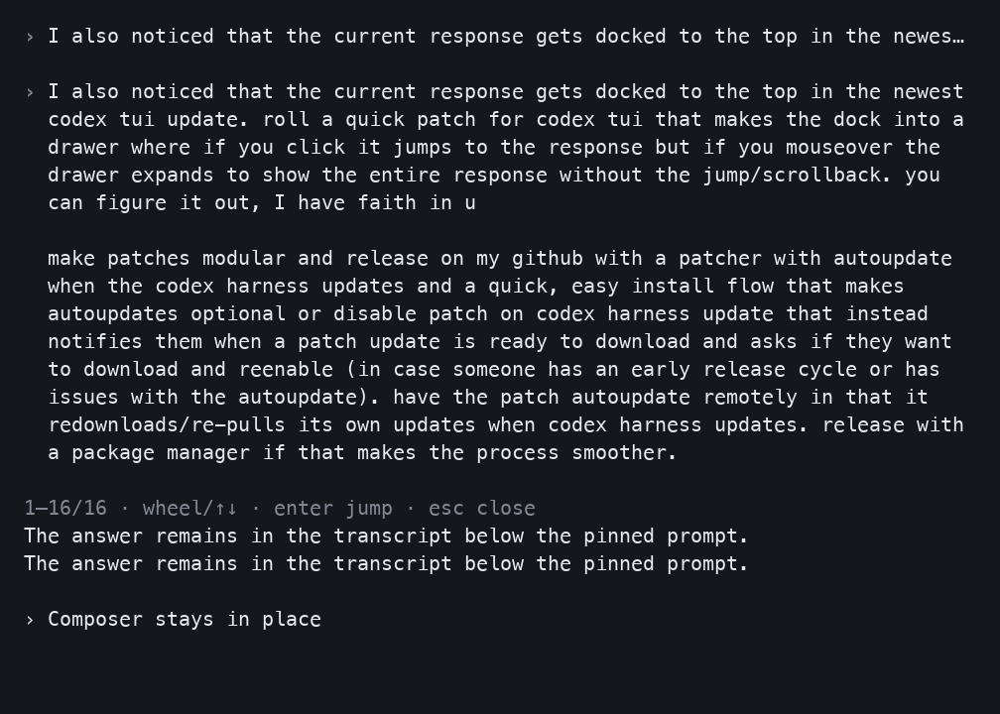

{{TITLE}}
A full layout for a basic setup. Extra content for a statusline you have customized.
Choose what fits
uv tool install git+https://github.com/rachael/harness-ui-mods.git
{{INSTALL_COMMAND}}Component downloads add to your existing choices. Repeats preserve off choices. Use --replace-selection for deliberate replacement, or uncheck a component in the installer to remove it. Full source availability does not enable the optional session sidebar.
Start patched Codex with harness-ui launch; installation leaves the stock codex command intact.
Basic setup gets the full layout. Customized statuslines get extra content by default; either mode is selectable. Detects installed harnesses. Future updates ask first. Existing choices and disabled features stay that way.
Downloads contain shared source with the chosen install command. Native binaries are separate verified release assets; source builds may take 20–30 minutes or longer when no compatible prebuilt bundle exists.
Try the controls
Interactive simulation · synthetic content. Customization below is simulated; this page does not inspect your machine.
Plan a small release with two optional interface modules. Keep the information pane and prompt drawer independently selectable. Preserve existing settings, show important decisions in one place, and use a verified compatible build.
Hover to read · click the pinned line to jump› Plan a small release with two optional interface modules. Keep the information pane and prompt drawer independently selectable.
I'll keep the module choices separate and verify the selected combination.
The transcript stays in place while the prompt drawer is open.
Sidebar placement follows the harness: the native Claude pane is on the right. An explicitly launched tmux layout can add a left sidebar; this simulation does not move terminal panes.
Hover over the pinned line or use “Show full prompt”.
Native rendered views
Rendered from the native drawer fixture's terminal cells. These are not desktop screenshots.




Detailed guide · Verified releases · Source archive checksums